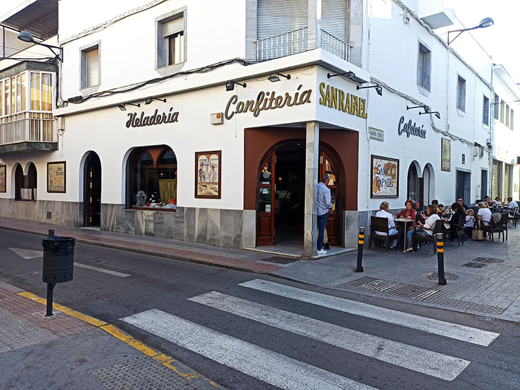

Desde 1959, en Cafetería San Rafael elaboramos con dedicación y cariño los dulces que forman parte de la historia de Dos Hermanas. Nuestra confitería, de tradición familiar, nació con el propósito de ofrecer productos artesanos de la más alta calidad, elaborados a diario en nuestro obrador propio.
En nuestros locales podrás disfrutar de un ambiente acogedor, ideal para desayunar, merendar o compartir momentos especiales con familia y amigos. Te ofrecemos una amplia variedad de pasteles, bollería, tartas personalizadas y especialidades típicas de cada temporada, siempre con el sabor auténtico de la repostería tradicional
Con más de seis décadas de experiencia, seguimos apostando por la calidad, la cercanía y el trato amable que nos caracteriza. Te invitamos a visitarnos y a descubrir por qué Cafetería San Rafael es todo un referente dulce en Dos Hermanas.